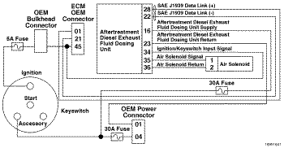
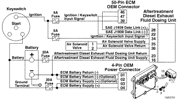

Código de Falha 3569 (Assistido a ar)
|
| CÓDIGO | RAZÃO | EFEITO |
| Código de Falha: 3569 PID: SPN: 3362 FMI: 7 LÂMPADA: Advertência SRT: |
Linhas de Entrada da Unidade Dosadora do Fluido de Escape de Diesel do Sistema de Pós-tratamento - Sistema Mecânico Não Responde ou Fora de Ajuste. Foi detectado um problema com o suprimento de fluido de escape de diesel. |
O sistema será incapaz de borrifar fluido de escape de diesel para o sistema de pós-tratamento. |
|
 ISB4.5, ISB6.7, ISD4.5 e ISD6.7 CM2150 SN/ISL8.9 CM2150 SN/ISZ13 CM2150 - Circuito da Unidade Dosadora de Fluido de Escape de Diesel
|
|
 ISM11 CM876 SN - Circuito da Unidade Dosadora de Fluido de Escape de Diesel
|
A unidade dosadora fornece fluido de escape de diesel para o injetor do sistema de pós-tratamento através da linha de alimentação do injetor.
Existem três linhas de fluido de escape de diesel. Uma linha entre a unidade dosadora e o injetor do sistema de pós-tratamento, e as outras duas linhas entre a unidade dosadora e o tanque de fluido de escape de diesel. Essas linhas podem ser ocultas parcialmente pelo sistema de Redução Catalítica Seletiva (SCR) e outros componentes do veículo. O roteamento das linhas varia dependendo da arquitetura do sistema de pós-tratamento e do OEM.
Este diagnóstico é executado continuamente enquanto o sistema de SCR aplica a dosagem de fluido de escape de diesel no sistema de pós-tratamento.
A unidade dosadora de fluido de escape de diesel detectou uma obstrução na linha de alimentação do injetor (entre a unidade e o injetor).
Esta falha indica que a unidade dosadora de fluido de escape de diesel foi capaz de criar pressão, mas não de borrifar fluido de escape de diesel no fluxo de escape.
As possíveis causas deste código de falha são:
Se forem detectadas linhas de fluido de escape de diesel obstruídas devido a acúmulos, certifique-se de que a unidade dosadora esteja purgando corretamente quando a chave de ignição é desligada (OFF). As contagens de purga incompleta podem ser vistas usando-se o menu do Monitor/Registrador de Dados na seção de pós-tratamento do INSITE™. Se estiver equipado com um interruptor de isolamento da bateria, o veículo deve ter um dispositivo de atraso embutido para evitar o desligamento da unidade dosadora até que a sequência de purga esteja concluída.
Consulte Diagnóstico do Código de Falha 3569 (Assistido a ar).